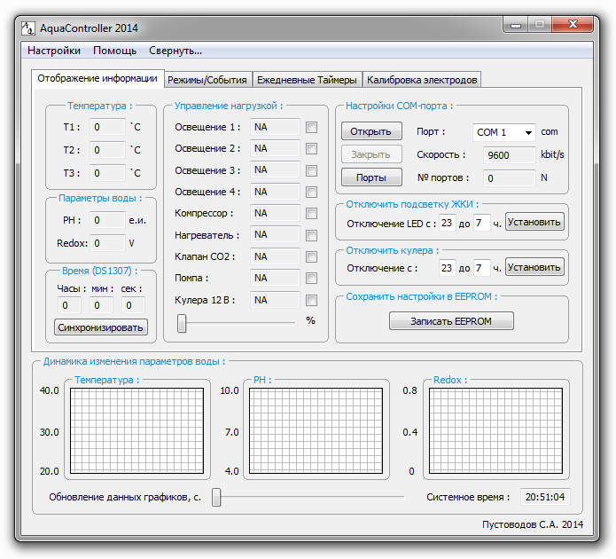

На текущей вкладке ПО AquaController 2014 отображается состояние температурных датчиков, показатели PH и Redox-потенциала, текущее время системных часов, текущее значение часов реального времени

Внешний вид вкладки "Отображение информации".
Напротив каждого канала отображается его текущий статус: NA - (Not Available) отключено, HAND - ручной режим, TIMER - таймеры, а так же состояния заданных режимов: PH/CO2 - работа клапана СО2 (режим PH/CO2), DOLIV - работа помпы (режим автодолива воды), TEMP_M - работа кулеров (температурный режим), PRODUV - работа кулеров (режим продувки крышки), HEATER - работа нагревателя (температурный режим).
Для передачи данных между устройством и ПО использовался протокол RS-232. Cвязь с устройством организована по средствам радиоканала Bluetooth, либо прямого подключения по USB (Virtual COM-port). Скорость передачи данных фиксирована (9600 kbps).
Что бы установить текущее системное время для устройства - нажмите кнопку <Синхронизировать>. Что бы записать данные настроек в память контроллера - нажмите кнопу <Запись EEPROM>. Для установки интервала времени, запрещающего работу подсветки ЖКИ и кулеров - нажмите соответствующую кнопку <Установить>.
На общем диалоговом окне отображаются графики температуры (по 3-м датчикам), PH и Redox-потенциала. Частота обновления отображаемых данных может быть задана в диапазоне от 1 до 60 сек.